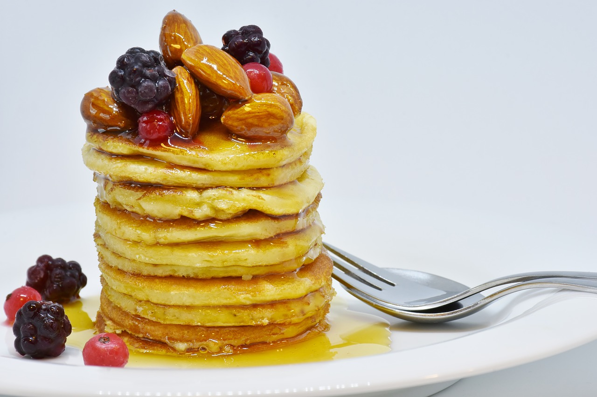

Pancakes
Ingredients
| Plain flour | 100g |
| Eggs (large) | 2 |
| Milk | 300ml |
You probably already have:
| Oil (sunflower or vegetable) | 2 Tablespoons |
| Salt | |
| Sugar | 2 Tablespoons |
Preparation
- Put plain flour, large eggs, milk, sunflower or vegetable oil and a pinch of salt into a bowl or large jug, then whisk to a smooth batter.
- Set aside for 30 mins to rest if you have time, or start cooking straight away.
- Set a medium frying pan or crêpe pan over a medium heat and carefully wipe it with some oiled kitchen paper.
- When hot, cook your pancakes for 1 min on each side until golden, keeping them warm in a low oven as you go.
- Serve with lemon wedges and caster sugar, or your favourite filling. Once cold, you can layer the pancakes between baking parchment, then wrap in cling film and freeze for up to 2 months.